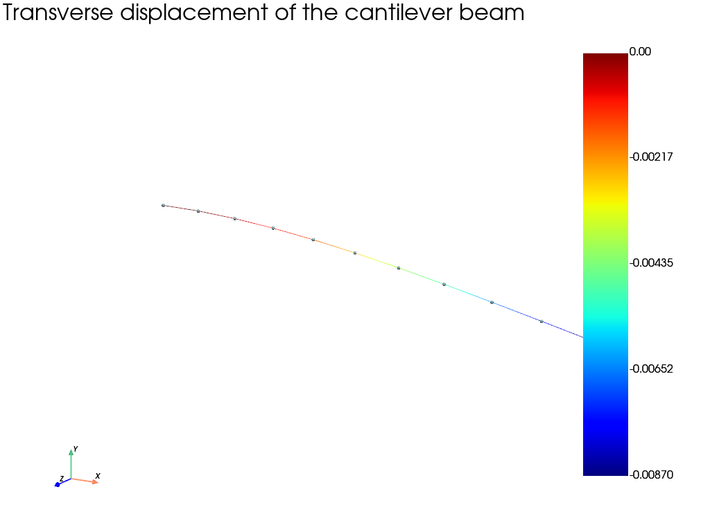

Note
Go to the end to download the full example code.
Cantilever beam with beam elements
Simple cantilever beam example using different kinds of beam elements. The tip deflection is compared with the analytical Bernoulli or Timoshenko value.
import fedoo as fd
import numpy as np
E = 1e5
nu = 0.3
fd.ModelingSpace("3D")
fd.constitutivelaw.ElasticIsotrop(E, nu, name="ElasticLaw")
# circular section
R = 1
Section = np.pi * R**2
Jx = np.pi * R**4 / 2
Iyy = np.pi * R**4 / 4
Izz = np.pi * R**4 / 4
k = 0.8 # shear shape factor (k=0 -> no shear effect)
L = 10 # beam length
F = -2 # Force applied on right section
# Build a straight beam mesh along the X axis (any other orientation works the
# same way, e.g. ``np.array([[0, 0, 1]])`` for a beam along Z)
Nb_elm = 10 # Number of elements
crd = np.linspace(0, L, Nb_elm + 1).reshape(-1, 1) * np.array([[1, 0, 0]])
elm = np.c_[np.arange(0, Nb_elm), np.arange(1, Nb_elm + 1)]
fd.Mesh(crd, elm, "lin2", name="beam")
nodes_left = [0]
nodes_right = [Nb_elm]
# computeShear = 0: no shear strain is considered. A Bernoulli element is used
# ("bernoulliBeam" element).
# computeShear = 1: shear strain using the "beam" element (shape functions
# depend on the beam parameters) -> Friedman, Z. and Kosmatka, J. B. (1993).
# An improved two-node Timoshenko beam finite element. Computers & Structures,
# 47(3):473-481.
# computeShear = 2: shear strain using the "beamFCQ" element (using internal
# variables) -> Caillerie, D., Kotronis, P., and Cybulski, R. (2015). A new
# Timoshenko finite element beam with internal degrees of freedom.
# International Journal for Numerical and Analytical Methods in Geomechanics.
computeShear = 1
if computeShear == 0:
fd.weakform.BeamEquilibrium(
"ElasticLaw", Section, Jx, Iyy, Izz, name="WFbeam"
) # by default k=0 i.e. no shear effect
fd.Assembly.create("WFbeam", "beam", "bernoulliBeam", name="beam")
elif computeShear == 1:
fd.weakform.BeamEquilibrium("ElasticLaw", Section, Jx, Iyy, Izz, k=k, name="WFbeam")
fd.Assembly.create("WFbeam", "beam", "beam", name="beam")
else: # computeShear = 2
fd.Mesh["beam"].add_internal_nodes(
1
) # adding one internal nodes per element (this node has no geometrical sense)
fd.weakform.BeamEquilibrium("ElasticLaw", Section, Jx, Iyy, Izz, k=k, name="WFbeam")
fd.Assembly.create("WFbeam", "beam", "beamFCQ", name="beam")
pb = fd.problem.Linear("beam")
pb.bc.add("Dirichlet", nodes_left, ["Disp", "Rot"], 0)
pb.bc.add("Neumann", nodes_right, "DispY", F)
pb.solve()
# Post treatment
results = pb.get_results(fd.Assembly["beam"], ["Fext"])["Fext"]
print("Reaction RX at the clamped extremity: " + str(results[0][0]))
print("Reaction RY at the clamped extremity: " + str(results[1][0]))
print("Reaction RZ at the clamped extremity: " + str(results[2][0]))
print("Moment MX at the clamped extremity: " + str(results[3][0]))
print("Moment MY at the clamped extremity: " + str(results[4][0]))
print("Moment MZ at the clamped extremity: " + str(results[5][0]))
print("RX at the free extremity: " + str(results[0][nodes_right[0]]))
print("RZ at the free extremity: " + str(results[2][nodes_right[0]]))
results = pb.get_results("beam", "BeamStress")["BeamStress"]
IntMoment = np.array(results[3:])
IntForce = np.array(results[:3])
U = np.reshape(pb.get_dof_solution("all"), (6, -1)).T
Theta = U[: nodes_right[0] + 1, 3:]
U = U[: nodes_right[0] + 1, 0:3]
sol = F * L**3 / (3 * E * Izz)
if computeShear != 0 and k != 0:
G = E / (1 + nu) / 2
sol += F * L / (k * G * Section)
print("Analytical deflection: ", sol)
print(U[-1])
Reaction RX at the clamped extremity: 0.0
Reaction RY at the clamped extremity: 2.0000000000000053
Reaction RZ at the clamped extremity: 0.0
Moment MX at the clamped extremity: 0.0
Moment MY at the clamped extremity: 0.0
Moment MZ at the clamped extremity: 20.000000000000114
RX at the free extremity: 0.0
RZ at the free extremity: 0.0
Analytical deflection: -0.008695165057587216
[ 0. -0.00869517 0. ]
Plot the deformed beam
The displacement is magnified so that the bending of the slender beam is clearly visible. Colors represent the transverse displacement.
plot_results = pb.get_results("beam", "Disp")
max_displacement = np.max(np.linalg.norm(plot_results["Disp"], axis=0))
display_scale = 0.15 * L / max_displacement
plot_results.plot(
"Disp",
component="Y",
scale=display_scale,
show_edges=True,
show_nodes=True,
title="Transverse displacement of the cantilever beam",
)

Total running time of the script: (0 minutes 2.505 seconds)